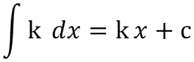
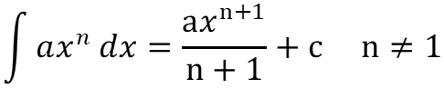
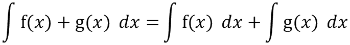
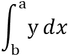

| Standard Results |
|---|
|  |
|  |
|  |
The process of Integration is opposite to differentiation. It can be used to find the constant c, which is where the curve passes through the y axes when x = 0.
One application of integration is that it can be used to find the arena under a curve.
| Definite Integral Notation |
|---|
|  |
| Where a and b are two values of x and y is a function of x. |